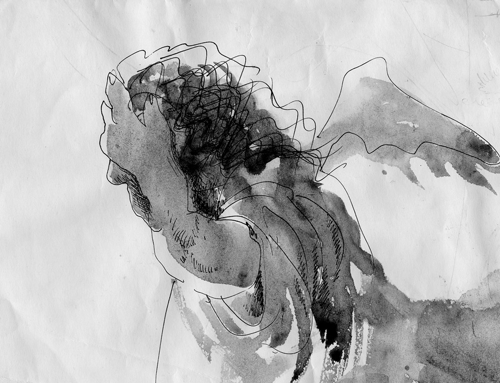

- Помышления плотские суть смерть,
- А помышления духовные — жизнь и мир.
- (Рим. 8:6)
- А помышления духовные — жизнь и мир.
Проблема Человека была актуальной в искусстве с древнейших времен.
Она остаётся актуальной (я бы сказала — самой главной) и в искусстве наших дней.
На пороге ХХ века весь культурный мир был увлечен идеей Ницше: человек — это то, что надлежит превзойти. Человеческий род измельчал, выродился, утратил величие героев мифа, превратился в толпу обывателей, «маленьких людей». Ницше мечтает о сверхчеловеке, превосходящем нынешних людей настолько же, насколько человек превосходит обезьяну.
Лучшие умы человечества — литераторы, художники, фотографы, кинематографисты пытаются найти решение проблемы: на каких путях возможно спасение человечества от прогрессирующей деградации и озверения?
ХХ-й век ещё только расчищает площадку под новое строительство: показывает человека в зеркале искусства с беспощадной прямотой и едким сарказмом, обнажает все его пороки и предрекает скорую гибель (Пикассо, Бэйкон, Миро, Клее...). Фантасты мечтают о переконструировании человека, его усовершенствовании путём придания ему сверхъестественных способностей. Так появляются различные «матрицы», «аватары», инопланетяне, вампиры, «иные» — А. Кларк, Р. Брэдбери, С. Лем, С. Лукьяненко, Б. и А. Стругацкие и др.
Живописцы и графики авангардных направлений в конце ХХ и начале ХХI в. ищут решения проблемы на путях абстрактного искусства, в котором отсутствует изображение человека, но воплощаются понятия о всеобщих законах бытия, или о мире человеческих чувств и переживаний (геометрический и экспрессивный абстракционизм).
В наши дни жанр портрета исчез из практики искусства, сознающего себя как передовое и профессиональное. Реалистическое изображение человека в живописи или графике стало большой редкостью.
Анна Королёва — один из редких художников, показывающих нам реального человека — не только нашего времени, но Человека вообще, заслуживающего этого имени.
На его лице вы не увидите знаков обычных пороков: корыстолюбия, злобы, зависти, распрей, обмана, злонравия, гордости, вероломства, непослушания...
На лицах этих людей мы читаем иной раз сомнение, тревогу, скорбь — но бóльшей частью — кротость, доброту, надежду, долготерпение, покаяние. Эти люди мудры, но не заносчивы, они скорбят, но не отчаиваются: ведь отчаяние — великий грех.
Серия графических портретов Анны Королёвой напоминает нам о существовании простых людей — как мы с вами — послушных человеческому Закону и почитающих суды Творца, которые «вожделеннее золота, слаще мёда и капель сота».
Графика этой серии проста и безыскусна — как будто рисует сама рука, без принуждения разума или расчета. — Так оно и есть. Художник — как будто инструмент, на котором играет некий высший Дух. Зато уж нет здесь ни одного пустого слова, лишнего штриха или пятна. Каждый поворот гибкой линии что-то значит, о чем-то говорит.
Всмотритесь в эти рисунки.
СРЕДИ ЛЮДЕЙ
Мы одно
Левант
Вопрос
Подозрение
Без слов
Триединство
Созерцание
Среди людей
Одна женщина
Монолит
Заседание кафедры
Вроде женщина
Вопрос и ответ
Сатори
Вместе
АНГЕЛЫ ПРИЛЕТЕЛИ
Первый
Поучающий
Ангелы в недоумении

В отчаянии
Ангел и его человек
Шествие
ИЗ НИЧЕГО
Рождественская звезда
Потоки
Покой
Огонь
Экслибрис ВК
Нечто
Боль
Л. Миронова,
09.10.2011